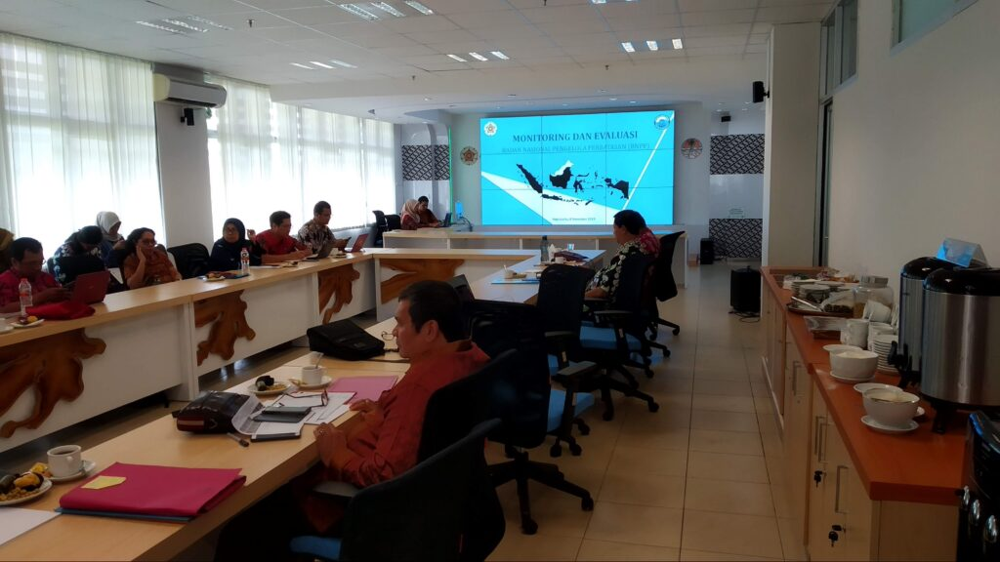
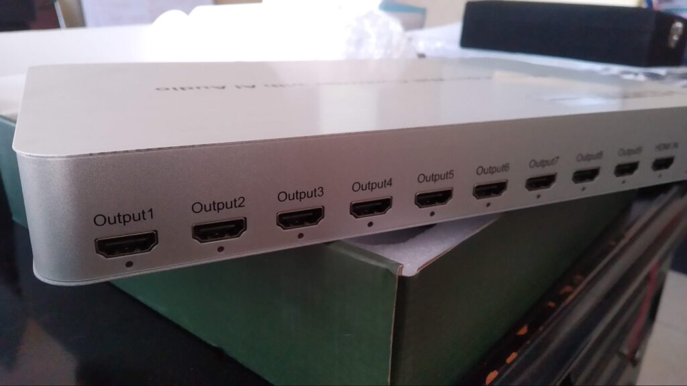

Designing a Flexible & Cost Effective Teleconferencing Solution
Our office has three workspaces that are also used for teleconference meetings with our partners and stakeholders. Room A, built in 2017 as a grant from the Norwegian government and managed jointly with the Kementerian Lingkungan Hidup dan Kehutanan, measures 20×8 meters. Room B was built simultaneously and also managed jointly with the Kementerian Lingkungan Hidup dan Kehutanan, measures 8×8 meters. Room C, built in 2023 in collaboration with the Kementerian Desa, Daerah Tertinggal dan Transmigrasi, measures 6×8 meters.
All three have different facilities for teleconference activities. Room A uses the following setup:
- 9 unbranded screens with Samsung panels controlled by also unbranded video wall controller
- Yamaha RX V385 audio receiver
- 4 speakers and 1 Bose subwoofer
- Acer Aspire AIO PC
Room B only has a 24-inch Samsung monitor. Room C has a 65-inch Sharp Aquos smart TV. For the camera and microphone, I recommend purchasing a Logitech BCC950 Teleconference Camera, which functions as a webcam, speaker, and microphone. I purchased it in 2020 for 3 million rupiah. This camera is used for various activities, as the three rooms are rarely used simultaneously. Furthermore, this camera is often brought along for field activities that require teleconferencing.

Challenges
For rooms B and C, the Logitech BCC950 is more than adequate for teleconferencing, as the maximum number of participants is around 15. Unlike room A, additional equipment is needed to streamline teleconferencing. For example, the audio for Logitech BCC950 sometimes can’t capture the voice of a speaker at the other end of the room. Therefore, a separate microphone is required for the speaker at the other end. Similarly, the speakers are used with a sound system with a Yamaha audio receiver and Bose speakers already installed in the room. However, due to various reasons, we were unable to procure an audio mixer to connect the microphone to an audio receiver or computer. Therefore, we typically use large portable speakers connected to wireless microphones, hoping the sound can be clearly picked up by the Logitech BCC950 and heard by teleconference participants.

Because it was a grant from the Norwegian government, meeting room A was installed by a separate vendor, including the screen, audio, and supporting equipment. Unfortunately, there was no documentation or details regarding the equipment used. Therefore, in 2021, the video wall controller failed, which I suspected was due to heat given that the video wall controller was housed in a closed cabinet without adequate air circulation. The initial symptom of this failure was the screen turning off after a long teleconference. To address this, I performed maintenance by cleaning the fan. Since the video wall controller’s fan resembles a PC fan, I purchased a PC fan and installed it there. During operation, the cabinet door was also slightly opened to allow for better air circulation. When I was a computer operator, sitting close to the cabinet housing the video wall controller, the heat from the audio receiver and video wall controller was quite noticeable due to the lack of air conditioning directed in front of it.
Unfortunately, this unbranded video wall controller eventually broke down. Rather than repairing the equipment due to the lack of documentation or information, the decision was made to purchase a new video wall controller, which was proposed for the 2022 budget year. I was tasked with the purchase, and after careful consideration, I decided to purchase a Lexcorn video wall controller that supports 4K resolution and a 3×3 screen configuration for 5 million rupiah.

The result of this teleconference room configuration was that our main clients, both the Kementerian Lingkungan Hidup and the Kementerian Desa, Daerah Tertinggal dan Transmigrasi frequently visited our office for discussions while conducting teleconferences with the Jakarta office. After President Prabowo took office, these two ministries were split, but the Kementerian Desa and the Kementerian Transmigrasi still frequently visited and offered work for our study center.